[Прим. авт.: мойры — богини судьбы в древнегреческой мифологии]
Может быть, вы мне сейчас не поверите, но
Мойра устала удерживать веретено.
Мойра устала судьбы бесконечные нити
Тщетно сплетать — и теперь говорит «извините».
Мойра теперь говорит, что покой обретён,
Будет свиваться судьба без её веретён.
Мойра теперь никогда за людей не в ответе —
Только лишь радость теперь впереди, только ветер.
Мойра сжимает весло — новый свой атрибут.
Ветер взметнёт паруса — и гребцы отгребут.
Мойра по меркам богов молода — ей и ста нет.
Больше она ни за что уж богиней не станет.
Станет она безответственно плыть по воде —
Как-нибудь там без неё разберутся везде.
Как-нибудь там всё решится само понемногу —
Пусть все научатся вольно шагать, а не в ногу.
Шляпка гриба впереди или крышка гроба,
Вёсла — забота её, а судьба — не судьба.
Мойра покинула свой древнегреческий полис,
Лодку свою направляет на Северный полюс.
Холод её не заботит и тьма не страшит.
Смотрит она, как на береге, снегом прошит,
Ветви деревьев покрыл перламутровый иней…
Больше она ни за что уж не станет богиней.
23 марта 2026
Не надо слёз, не надо ссор.
«Ты как? — Да так, вполне ничё так»,
И всё. Дорога на Доссор
Ушла, и горизонт нечёток.
Нечёток план. Нечёток срок.
Изрядны колебанья в смете.
Лишь пара строф. Лишь восемь строк.
И в тех — нет ни любви, ни смерти.
* * *
НАБЛЮДЕНИЕ
После долгого голода снедь
Начинает заметно вкуснеть.
(всё)
* * *
АВТОСТОПНОЕ
Красота до горизонта —
В почве, в небе и в волне!
Если так, то в чём резон-то
Красоту искать во мне?
Степь мешается с дорогой,
Ветер дует с озерца...
Ты меня поменьше трогай —
И побольше созерцай.
* * *
ОБЪЯВЛЕНИЕ
(можно на мотив припева «Ну что тебе сказать про Сахалин»)
Меняю дом на улицу и Запад на Восток.
Уместен торг. Да только толку с торга?
Ведь каждый человек имеет право на восторг —
И право на отсутствие восторга.
28 января, 6 и 7 февраля 2026
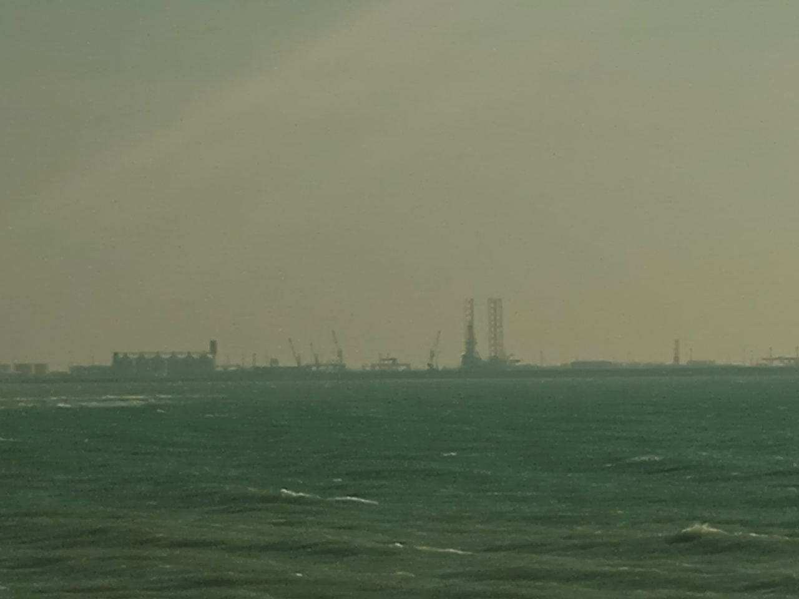
(элегия)
Смотря друг на друга, мы в разных нуждаемся призмах,
Чтоб сквозь них разглядеть детальней
Любую неровность, любой отличительный признак —
Где родной человек, где дальний.
Меня же спросить, я б одной ограничилась призмой,
До того никогда не сущей —
Чтоб каждый и каждая были мне присным и присной,
Свет несущим и свет несущей.
И так я решу, что отныне исполнен каприз мой,
Когда тьму устраню в зачатке —
А свет, преломляемый этою новою призмой,
Долетит до твоей сетчатки.
6 декабря 2025
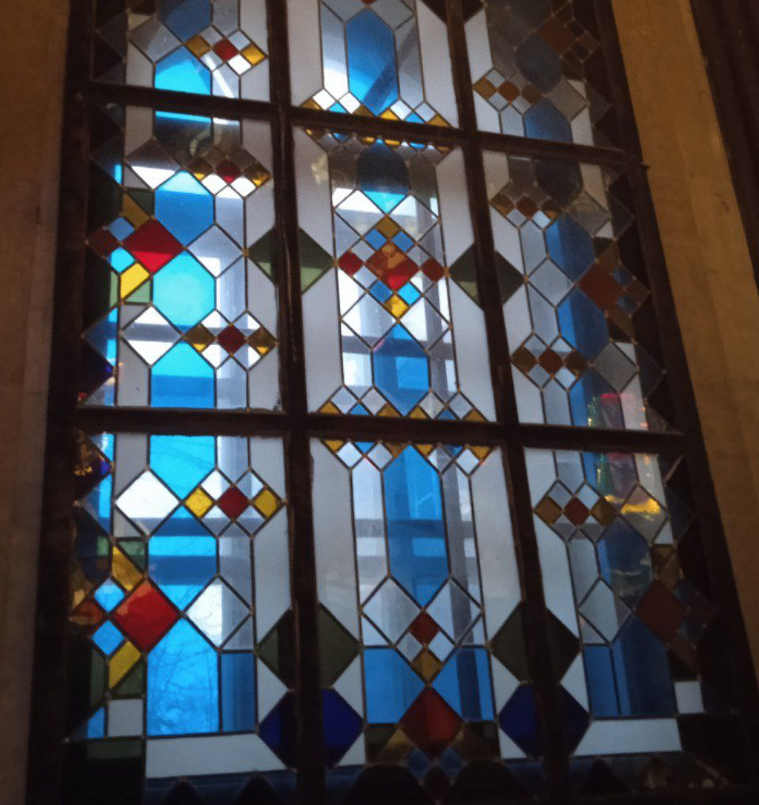
(примитив)
Каток укладывает асфальт спать.
Растёт некультурный слой.
И время возвращается прочь, вспять,
Разбег усмиряя свой.
Декабрь набирает разгон, пыл,
Недремлющих изловив,
Но люди не забыли, как он был
Уступчив и незлобив.
Как лекарь всем прописывал спорт, спирт,
И воздух чтоб был не спёрт.
Но если кто уснул – так и пусть спит,
И ладно – что спирт, что спорт.
Как ветер запах сена, жнивья нёс —
Крошить голубям батон.
И яйца приучал их, не вья гнёзд,
Откладывать на потом.
Всё будет, но не сразу. Не плачь, спи.
Не зря же кругом ни зги.
Не зря ж увидеть кроме чужих спин
Нельзя ни один изгиб.
И город засыпает густой снег —
Поди ж отгони чуму.
И город засыпает. В своём сне
Не учится ничему.
6 сентября 2025
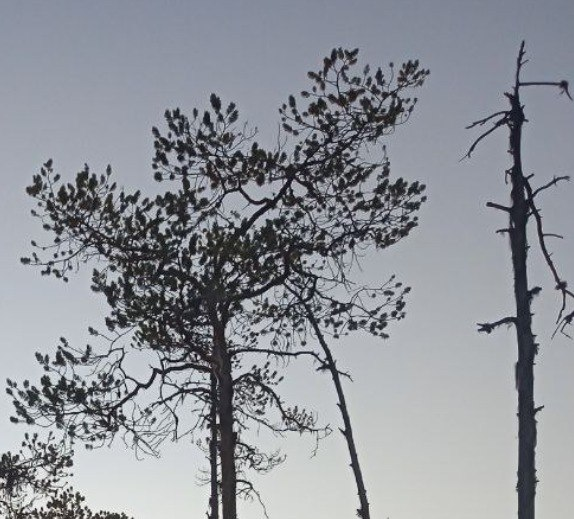
Всё в природе имеет предел. Всё в природе имеет центр.
Всё стремится избавиться от наваждения.
В том, что всё обустроено так, есть и наших заслуг процент:
Наша миссия — выдача прав на вождение.
Мы ведущие в этой стезе. Только водим мы не авто —
Хороводы мы водим до изнеможения.
Не вперёд, не назад, а вокруг. Гарантированный повтор.
Так вступайте же к нам, в Круговое движение.
Мы научим вести хоровод. Мы научим искать свой круг.
Мы научим кружиться — вестимо, по кругу.
И по левую руку твой друг, и по правую руку друг —
Мы научим блюсти круговую поруку.
Мы научим вести разговор. Мы научим вести себя,
Как положено нам — что в огне, что во влаге.
Мы научим вести протокол. Не фальшивя и не сипя —
Петь наш гимн. Чтить наш герб. Поднимать наши флаги.
Ни к чему вам «вперёд» и «назад». Там безвестность, враждебность, страх,
Ни кола, ни двора — нет сложнее экзаменов.
Там другой календарь и язык: время зыбко, а речь пестра —
Не поможет ни папа Григорий, ни Заменгоф¹.
А у нас все друг другу друзья. Невозможен любой провал —
Можно ждать лишь побед и не ждать поражения.
Приходите в наш дружеский круг. Получайте у нас права.
Не оставит без прав Круговое движение!
¹ Имеются в виду папа римский Григорий XIII и Людвик Заменгоф. Первый ввёл в оборот «всеобщий календарь» (григорианский),
второй — «всеобщий язык» (эсперанто).
4 сентября 2025
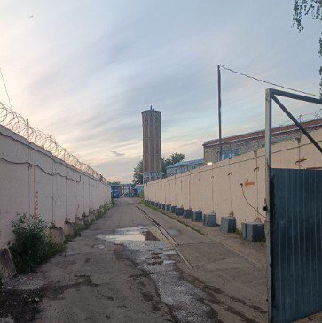
(прогрессирующая силлабика)
И радости не изведав, и горести не избыв,
Мету я полы в избе да сор выношу из избы.
Potius sero quam nunquam¹ — но горсть добавляется к горсти.
Как часто ходить мне к вам, чтоб уже приходить не в гости?
Чтоб новым слезам капели не достичь моего плаща, и
Над сором чтоб мы корпели, лишь в стихи его воплощая.
¹ ‘лучше поздно, чем никогда’
11 августа 2025
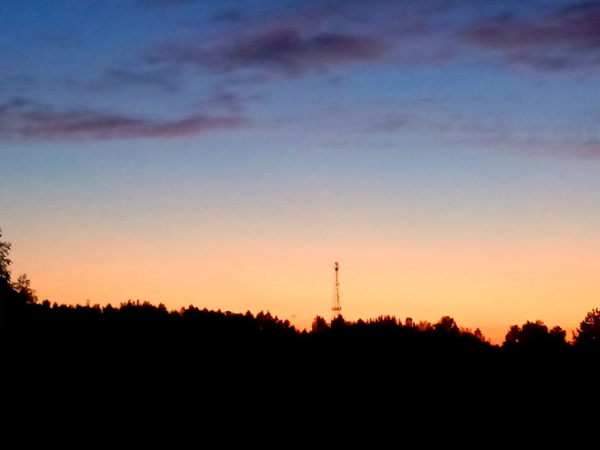
Обращаюсь к тебе, гражданину!
Что мне, дёргать тебя за штанину?
Ты – китаец, француз, московит,
Ты – отважен, умел, мозговит,
Ты – зубастый, рукастый, стопастый,
Ты – стоухий, стоглазый, стопастый,
Мускулист, бицепсат и прессат –
Коллективный такой адресат.
Так слушай меня внимательно!
Выступая со сцены с докладом,
Ты глаголом сердца жги дотла там.
Выступая в защиту души,
Прилагательным их потуши.
Выступая за рамки устоя,
Ты заполни собою пустое
Или полное опустоши.
Выступая, как пот на лице,
Сотвори пиетет в наглеце,
Сотвори доброту в подлеце,
Сотвори тишину в беглеце.
Выступая, будь неудобен всем.
В пелене ли, в пелёнках, в плену ты –
Не молчи ни единой минуты.
Кто-то вздрогнет, всхохочет, всплакнёт –
Всё записывай тут же в блокнот.
Выражайся как можно честнее –
Без метафоры лучше, чем с нею,
Вне традиции лучше, чем в ней.
Будь наглядней, ясней и явней
И для вечности – не для блезиру –
Структурируй и вербализируй.
Не давай тишине прозвучать громче тебя.
* * *
Если кто в любопытстве мальчишечьем
Спросит – дескать, чего достиг?
Отвечай: формулировал чище, чем
Получается этот стих.
13 июня 2025
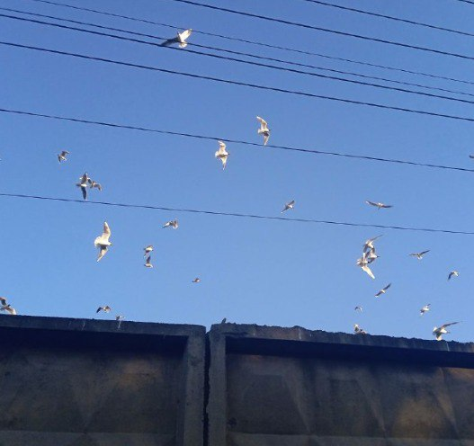
Стоит ли волноваться,
Видя, как вал новаций
Требует инвестиций?
Стоит ли известиться —
Будет ли окупаться?
В пламени оккупаций,
Санкций, спецопераций
Не на что опираться.
Стоит ли в век традиций
В жажде реформ родиться,
Корчиться – и метаться
В зарослях имитаций?
Стоит ли так манаться
С множеством эманаций
Фикций и аберраций,
Всячески побираться?
Стоит ли потоптаться
В поиске кооптаций,
Пятиться, кувыркаться…
Сколько же бифуркаций!
27 апреля 2025
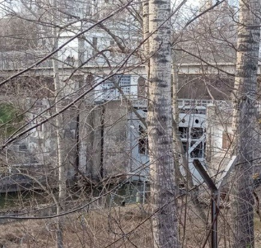
Всколыхнётся зелень полевая,
Вспомнив, как полуденное небо,
То водой, то светом поливая,
В ней растило равно быль и небыль.
Сорный злак, тончайшая былинка,
Небывало гордо распрямится.
Речь его, достойная билингва,
Потечёт сумбурной вереницей.
Объяснять всё сущее он пустится.
Как уста, раскроются все устьица.
Он дождю откликнется гуттатом,
Солнцу – всплеском собственного света.
Но они его слова – куда там! –
Не расслышат. Не дадут ответа.
Но молчанье тоже станет словом
В этом странном языке природы.
Ставши словом, сделается сломом,
Отделившим кредо от креода.
Тишина гнетущая, настигшая
Нас самих и наши длинностишия.
Мы родились злы. Затем добрéли.
Добрели́ до доброты дебрями.
Дикарями прыгали в апреле,
Декаданс встречали декабрями.
Жили в эпидемии и войны,
Вёсны, лета, осени и зимы.
Были счастливы, грустны, спокойны,
Несусветны, невообразимы.
Мы в себе копили впечатления.
В нас – сияние, как в печи – тление.
То шагали к цели мы, то мимо,
И везде пытались объясниться –
Песней, пантограммой, пантомимой…
Ждали отклик, не смыкав ресницы.
Всё, что есть, тащили на поверхность,
Не боясь ни выступов, ни вмятин.
Всё карабкалось. Не всё – коверкӑлось.
Но итог остался непонятен.
22 апреля 2025
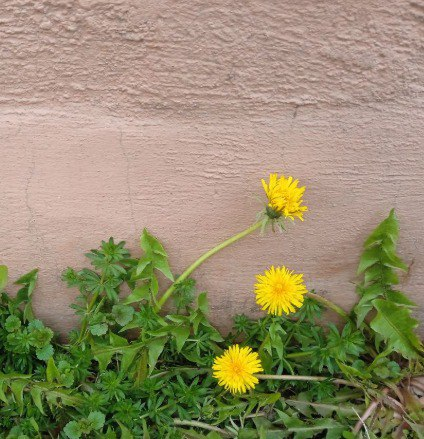
Лучше вынести сор из избы-то, чем
Позволять стихам из него расти.
Стих заведомо слаб и избыточен,
Как над ним не кряхти –
Полон смуты, робости, хворости,
Обретается в щепках и хворосте,
Но горит не ахти.
Не хочу, чтобы было некстати мне
Неживым стихом разгораться, и
Потому-то ищу я места темней,
Чем остатки костров.
Ни Вергилия, ни Горация –
Только фикция и аберрация,
Только несколько строф.
7 апреля 2025
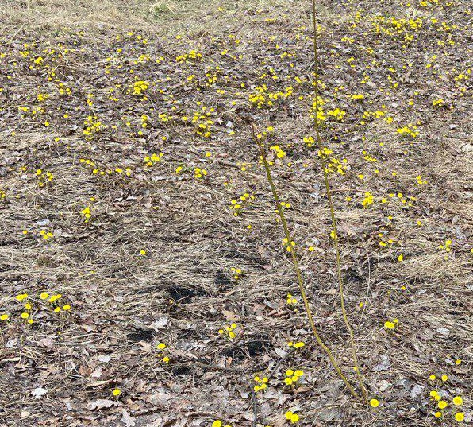
Тихоходна ли ты, быстра ли,
Невнимательна ли, востра ли,
До ближайшей деревни едешь
Или до берегов Австралии,
Отвлечёт тебя свет костра ли,
Увлечёт ли порыв мистраля,
Развлечёт ли тебя идея
Отрешиться и жить в астрале,
Незнакомка ль ты мне, сестра ли,
Однотонна ли жизнь, пестра ли –
Ограничено наше «вместе»
Оконечностью магистрали.
30 марта
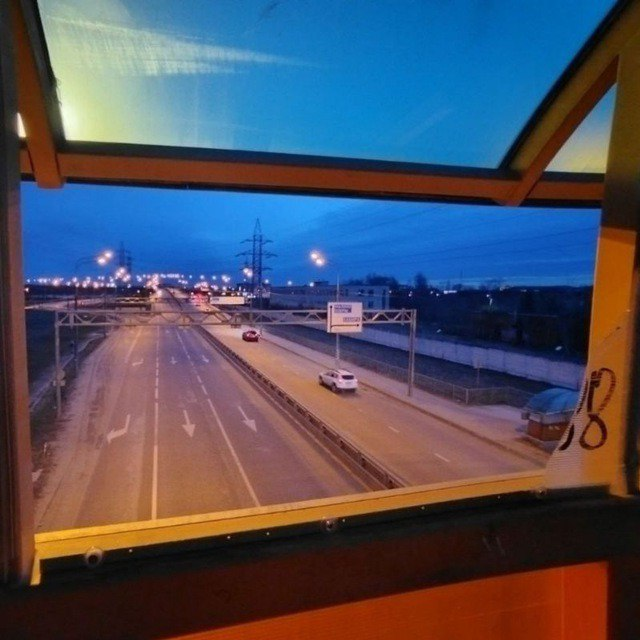
(исполняется максимально вредным голосом, полным подростковой драмы)
Я дружила с собою завтрашней,
Но рассорилась вскоре вдрызг.
Та ругала меня, пронзав страшней,
Чем пронзали бы сотни брызг.
«Ты, — скандалила, — мне не сверстница,
Я умнее на целый день!
Очень скоро на землю сверзнется
Вся небесная дребедень.
И воздушные за́мки начисто
Превратятся твои в утиль.
Так бросай же свои чудачества,
Не пора бы от них уйти ль?
Занималась бы чем-то значимым,
Не валяла бы дурака.
Пропадём ведь с тобой иначе мы,
Пропадём ведь наверняка».
Я привыкла к таким нотациям,
И спасает меня мой плед —
Плотно ежели обмотаться им,
Заглушает весь этот бред.
Я привыкла к подобным каверзам,
И в кармане ношу пятак.
Вновь подкинула. Выпал аверсом.
Снова сделаю всё не так.
24 февраля 2025
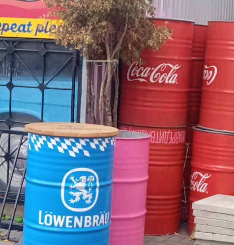
Я видела звëзды, я видела тени звëзд.
Я видела пыль под стопами звездочëта,
Та пыль стояла столбом, собой закрывая небо.
Дорога до неба же складывалась из вëрст —
Сей путь я хотела выдержать весь, да чë-то...
Не злись, я буду резвей, моя дорогая Геба.
Я видела зверства, я видела отблик зверств
На стенах, лишëнных выбелки и извëстки.
Здесь пыль стояла столпом. От звëзд всякий свет был тускл.
Я шла по дороге, где мрак был кругом разверст,
И высмотреть тщилась тусклые эти звëздки,
Не зная, свет их — волна и/или поток корпускул.
Я видела камни. Бесчисленный вал камней.
Все в трещинах и пробоинах. Я дивилась:
Неужто есть слабина — у эдаких каменюк-то?
Кончалась дорога. И небо пришло ко мне.
А жизнь всë текла — поверхностней водевиля.
Не злись, я стану трезвей, моя дорогая Нюкта.
21 февраля 2025
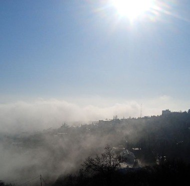
(многоголосье)
– Две тысячи какой? Как время эфемерно!
Возьмёт и пролетит фанерой над Парижем,
Реликт и авангард срастив в себе химерно.
Никак не описать подряд все вехи мерно –
Повествованья нить с трудом в ушкó пронижем.
– Такой себе был год. Лишь серость в нём да чалость.
Ни скучно, ни смешно. И так себе движуха.
Всё как-то не спалось. Всё как-то не кончалось.
О Риме не мечтать никак не получалось.
Вернуть имперский лоск – пока не всё зажухло.
– Уж если третий Рим, так всё бы как у римлян:
Ходить не в пиджаках – в тунике или тоге,
Смартфон и ноутбук – в утиль, где правит гремлин,
Закрыть Ютуб и X. Из сайтов – только kremlin.
Глядишь – и все пути ведут сюда в итоге.
– На станции метро, что «Римскою» зовётся
На «Площадь Ильича» построим пересадку –
Пускай, как дух, Ильич над всей страной завьётся.
И расцветёт душа, и сердце так забьётся,
Что хоть ликуй и пой – или танцуй вприсядку.
– А музыка – пустяк. Ведь главное, что кворум
Готов плясать и петь – мгновенно извинив те
Нелепые слова, что сказаны не хором.
Мы рады будем всем – юродивым и хворым –
Лишь червлень с серебром родится из финифти.
14 января 2025
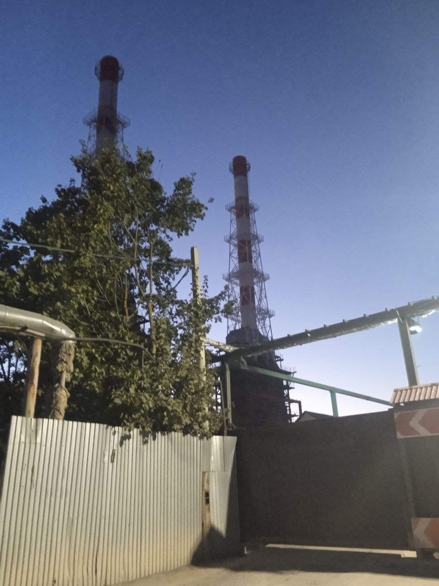
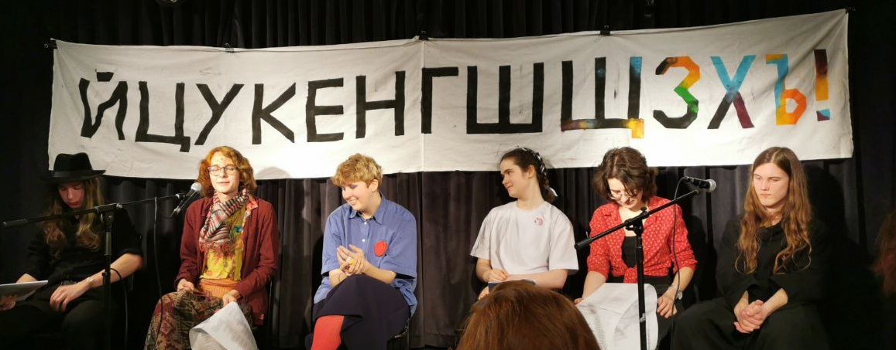